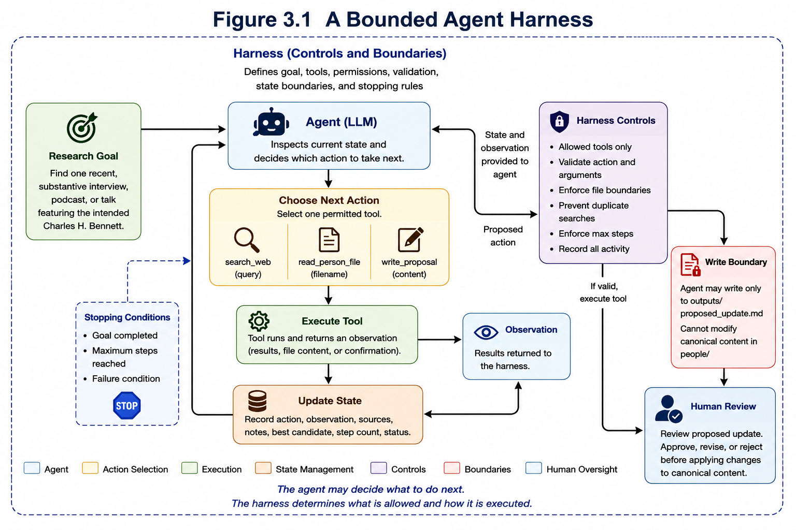

Lab 3: Building an Agent Harness
From Semantic Judgment to Controlled Agency
In Lab 1, we automated a research procedure. Python determined what steps should occur, and the system repeated those steps across multiple research subjects.
In Lab 2, we introduced a large language model as a semantic judgment layer. The system could distinguish the intended Charles H. Bennett from unrelated individuals with the same or similar name. However, the overall workflow remained largely predetermined: search once, evaluate candidates, validate the model output, and update the research file.
Lab 3 introduces a different capability.
Instead of being given a fixed sequence of actions, the AI system receives a research goal, a limited set of tools, a representation of its current state, and rules that constrain what it is permitted to do. The model may then decide which action to take next based on what it has already observed.
The result is a small but meaningful example of an agent harness.
Figure 3.1 A Bounded Agent Harness

Source: Author-created.
Show long description
The figure shows the Phase III agent harness. A research goal and current state are provided to a language model acting as the agent. The agent may choose one permitted action, such as searching the web, reading an approved person file, or writing a proposed update. Before execution, deterministic Python code validates that the requested action and arguments are permitted. The selected tool executes and returns an observation. The observation is recorded in persistent state and supplied to the agent during the next iteration. The process continues until the goal is satisfied or a maximum action limit is reached. The agent may create a proposed update, but it cannot directly modify the canonical research file.
From a Fixed Pipeline to an Agent Loop
The Phase II research process can be represented as a relatively fixed pipeline:
Search
↓
LLM evaluation
↓
Python validation
↓
Write result
The language model exercises judgment, but it does not decide what should happen next. Python determines the sequence in advance.
Phase III replaces the fixed sequence with a loop:
Goal
↓
Inspect current state
↓
Choose next action
↓
Validate action
↓
Execute tool
↓
Observe result
↓
Update state
↓
Choose next action
↓
...
The number and type of actions are therefore not completely predetermined. The system may search once, determine that the evidence is insufficient, refine the query, search again, compare results, and eventually decide that enough evidence exists to prepare a proposal.
This iterative relationship between decision, action, observation, and updated state is one of the defining features of an agentic system.
The infppl3 Project
The Phase III repository separates the agent, its tools, its state, its outputs, and the canonical research content:
infppl3/
│
├── agent/
│ ├── agent.py
│ ├── prompts.py
│ └── state.py
│
├── tools/
│ ├── web_search.py
│ ├── file_reader.py
│ └── file_writer.py
│
├── people/
│ └── 001-charles-h-bennett.md
│
├── memory/
│ └── research_state.json
│
├── outputs/
│ └── proposed_update.md
│
└── .github/
└── workflows/
└── run-agent.yml
This structure reflects the architecture itself. The model is only one component. The surrounding files define what it can do, what it remembers, where it can write, and how its activity is executed.
| Component | Primary Responsibility |
|---|---|
| agent.py | Runs the iterative decision loop and coordinates model calls, validation, tools, and state. |
| prompts.py | Defines the research goal, operating instructions, available tools, and behavioral constraints. |
| state.py | Loads, updates, and persists the current task state. |
| tools/ | Defines the actions that the agent is permitted to request. |
| memory/research_state.json | Stores task progress across decisions. |
| outputs/proposed_update.md | Stores the agent's proposed result for human review. |
| GitHub Actions | Executes the harness in a controlled cloud environment. |
A Goal Rather Than a Procedure
The Phase III task begins with a goal:
Find one recent substantive interview, podcast,
or talk featuring the intended Charles H. Bennett.
Notice what is missing.
The system is not told:
Search query A.
Then search query B.
Then select result 3.
Then write the output.
Instead, the agent must determine which permitted action is most appropriate given the current state of the task.
This changes the role of the language model. In Phase II, the model evaluated information supplied to it. In Phase III, the model also participates in deciding what information should be gathered next.
Tools as Bounded Capabilities
An agent does not need unrestricted access to the operating system. In fact, unrestricted access would make the system more difficult to reason about and govern.
The Phase III agent receives only three tools:
search_web(query)
read_person_file(filename)
write_proposal(content)
Each tool represents a specific capability.
The web-search tool can retrieve public information. The file-reading tool can read an approved profile in the people/ directory. The writing tool can create a proposal in the outputs/ directory.
The agent is not provided tools for deleting files, reading secrets, changing workflow files, executing shell commands, or modifying arbitrary repository content.
This illustrates a fundamental harness principle:
An agent should receive only the capabilities required to accomplish its task.
Agent Intention Is Not Agent Authority
This distinction can be summarized as:
Agent intention is not the same as agent authority.
The model may want to perform an action, but the model does not define its own permissions.
Authority is defined externally by the harness.
For example, the writing tool is deliberately implemented so that it can write only:
outputs/proposed_update.md
It cannot modify:
people/001-charles-h-bennett.md
The canonical research file therefore remains outside the agent's direct write authority.
This design introduces a human-review boundary between an AI-generated proposal and an authoritative content update.
State and Memory
An iterative agent must know what has already happened.
The Phase III harness stores task state in:
memory/research_state.json
A simplified state object may contain:
{
"goal": "Find one recent verified interview...",
"step": 3,
"max_steps": 5,
"status": "researching",
"searches": [
"Charles H. Bennett physicist interview",
"\"Charles H. Bennett\" IBM interview"
],
"sources_seen": [
"https://...",
"https://..."
],
"best_candidate": {
"title": "...",
"url": "...",
"confidence": 0.94
},
"notes": [
"Initial search returned mostly award pages.",
"A more targeted query produced an interview candidate."
]
}
This information provides working memory for the task.
Without state, every model call would behave like an isolated conversation. The agent might repeat the same query, forget previously observed sources, or fail to recognize that a promising candidate had already been identified.
State as Part of the Information System
The state file is not merely a debugging artifact. It is part of the information system.
It records:
- the goal being pursued;
- how many actions have been used;
- which search queries have already been attempted;
- which sources have already been observed;
- the strongest candidate identified so far;
- notes accumulated during the research process; and
- whether the task is still active, completed, or failed.
The next model decision is therefore informed by prior activity.
This creates a feedback loop:
Action
↓
Observation
↓
State update
↓
Next decision
The Agent Decision Schema
The model does not return unrestricted prose describing what it would like to do.
Instead, it returns a structured action object.
A search decision might resemble:
{
"action": "search_web",
"reason": "The current results do not contain a clear interview.",
"arguments": {
"query": "\"Charles H. Bennett\" IBM interview"
},
"best_candidate": null,
"note": "Narrowing the search around IBM may reduce ambiguity."
}
A later decision might propose:
{
"action": "write_proposal",
"reason": "A sufficiently strong verified interview has been found.",
"arguments": {
"content": "# Proposed Research Update ..."
},
"best_candidate": {
"title": "...",
"url": "...",
"confidence": 0.95,
"reason": "..."
},
"note": "Ready for human review."
}
Structured actions make the agent easier to validate and execute programmatically.
The model decides what it wants to do. The harness determines whether that request is permitted and how it is executed.
Validation Before Execution
Every proposed action passes through deterministic validation before a tool is called.
The harness checks questions such as:
- Is the requested tool permitted?
- Does the tool have the required arguments?
- Is the requested file the authorized person file?
- Has the proposed search query already been used?
- Does a proposal exist only after a best candidate has been identified?
For example:
if action not in ALLOWED_ACTIONS:
raise RuntimeError(
f"Agent requested forbidden action: {action}"
)
This introduces a deterministic control layer around probabilistic model behavior.
The same architectural principle appeared in Phase II, but Phase III makes it even more important because the model is now choosing among actions rather than merely classifying information.
Iterative Research
The successful Charles H. Bennett run illustrates how the agent adapts its strategy.
Rather than relying on one fixed search, the agent used multiple queries and refined its strategy as new evidence appeared.
The process can be summarized as:
Broad search
↓
Observe mostly profiles and award material
↓
Refine search around interview context
↓
Identify a stronger candidate
↓
Search more specifically for the candidate
↓
Confirm a direct interview source
↓
Prepare proposal
↓
Stop
The importance of this process is not merely that several searches occurred.
The later searches were influenced by the earlier observations.
The system therefore demonstrates adaptive behavior rather than simple repetition.
Stopping Conditions
An iterative system needs a rule for when iteration should stop.
The Phase III harness uses a maximum number of actions:
"max_steps": 5
The state-management code checks whether the agent may continue:
return (
step < max_steps
and state.get("status") not in {
"completed",
"failed"
}
)
This means the model cannot continue searching indefinitely.
The agent stops when either:
- the task is completed; or
- the maximum action limit is reached.
A stopping condition is a critical harness feature because autonomous loops without limits can consume excessive time, API usage, or computational resources.
Human-in-the-Loop Control
The Phase III agent does not directly update the authoritative research record.
Instead, it writes:
outputs/proposed_update.md
The proposed update contains the selected source, URL, rationale, confidence level, and a note indicating that the result requires human review.
The workflow therefore becomes:
Agent research
↓
Proposed update
↓
Human review
↓
Accept, revise, or reject
↓
Canonical content
This is an example of human-in-the-loop system design.
The human is not required to perform every research step manually, but remains responsible for approving the final authoritative change.
Why the Harness Matters
A language model alone is not an agent harness.
The harness is the surrounding infrastructure that makes agent behavior usable in a larger information system.
It provides:
- goals and instructions;
- tool definitions;
- tool permissions;
- structured action schemas;
- validation;
- persistent state;
- iteration;
- stopping conditions;
- restricted write authority;
- auditability; and
- human approval.
These elements transform a model call into a controlled operational process.
Model Capability Versus System Capability
One of the most important lessons of Phase III is that the capability of an AI application depends on more than the intelligence of the underlying model.
Consider two systems using the same language model.
The first system receives a prompt and produces text.
The second system can search, read approved files, maintain task state, revise its strategy, validate proposed actions, write a controlled output, and stop under predefined conditions.
Although both systems use the same model, their operational capabilities are very different.
This suggests a broader systems principle:
Model capability and system capability are not the same thing.
The harness determines how model intelligence is converted into usable, bounded organizational action.
Three Phases Compared
| Dimension | Phase I | Phase II | Phase III |
|---|---|---|---|
| Primary challenge | Repetition | Ambiguity | Controlled autonomy |
| Main logic | Explicit rules | LLM semantic judgment | LLM decision loop + deterministic harness |
| Workflow | Predetermined | Mostly predetermined | Adaptive within constraints |
| Tool choice | Defined by Python | Defined by Python | Selected by agent from an allowed set |
| Memory | Minimal | Limited to current request | Persistent task state |
| Stopping condition | End of script | End of evaluation | Goal completion or action limit |
| Write authority | Program writes directly | Program writes validated output | Agent may only create a proposal |
| Human role | Design procedure | Define context and constraints | Govern permissions and review outputs |
Automation, Agentic Research, and Harnessing
The three labs can now be understood as a progression in how decision authority is distributed.
PHASE I — AUTOMATION
Human defines procedure.
Software executes procedure.
↓
PHASE II — AGENTIC RESEARCH
Human defines goal and context.
LLM supplies semantic judgment.
Software controls the action.
↓
PHASE III — AGENT HARNESS
Human defines goal, tools, permissions,
state boundaries, and stopping rules.
Agent chooses among permitted actions.
Harness validates and executes those actions.
Human retains final authority.
The transition is therefore not simply from less AI to more AI.
It is a transition from fixed procedure, to delegated judgment, to bounded agency.
Governance and Control
As software becomes more agentic, system design increasingly becomes a governance problem.
Questions that were relatively unimportant in Phase I become central:
- Which tools should an agent be permitted to use?
- Which data should it be allowed to read?
- Which files should it be allowed to modify?
- How much money or API usage may it consume?
- How many actions may it take?
- What evidence is required before an action is accepted?
- Which decisions require human approval?
- How should failures and unexpected actions be recorded?
These questions are not solved by choosing a more powerful model.
They are solved through system architecture, controls, permissions, monitoring, and organizational policy.
Agent harness design is therefore an information-systems problem as much as an artificial-intelligence problem.
Key Terms and Definitions
- Agent
- A software component that receives a goal, evaluates its current context, and selects actions intended to advance that goal.
- Agent Harness
- The surrounding system that provides an agent with tools, instructions, permissions, state, validation, stopping conditions, and other controls required for reliable operation.
- Tool
- A bounded capability exposed to an agent, such as searching the web, reading an approved file, or writing a controlled output.
- Tool Permission
- A restriction defining which capabilities an agent is authorized to use and under what conditions.
- Agent Loop
- An iterative sequence in which an agent decides an action, observes the result, updates its understanding or state, and decides what to do next.
- Observation
- Information returned to an agent after a tool executes.
- State
- A structured representation of information about an ongoing task, including progress, prior actions, observations, and current status.
- Persistent State
- Task information stored outside the immediate model request so that it can be reused across multiple decisions or executions.
- Stopping Condition
- A predefined rule that determines when an iterative agent process must terminate.
- Human-in-the-Loop
- A system design in which human review or approval remains part of the decision process for selected actions or outputs.
- Least Privilege
- A design principle in which a user, program, or agent receives only the permissions necessary to perform its assigned task.
- Structured Action
- A model-generated request represented in a predefined schema that specifies an intended tool, arguments, and supporting rationale.
- Validation Layer
- Deterministic logic that checks whether a proposed action satisfies system rules before the action is executed.
- Controlled Agency
- The ability of an AI system to select actions dynamically while remaining constrained by externally defined permissions, tools, limits, and review mechanisms.